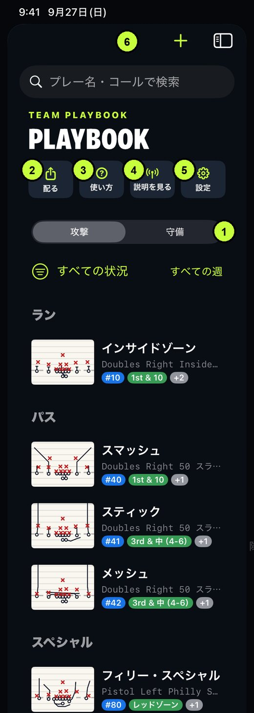
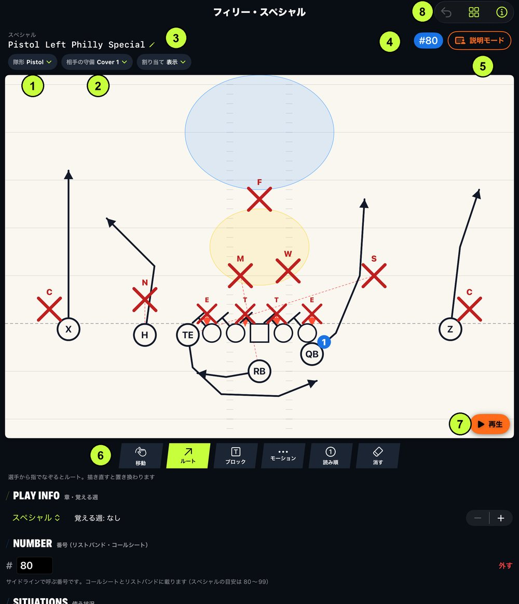
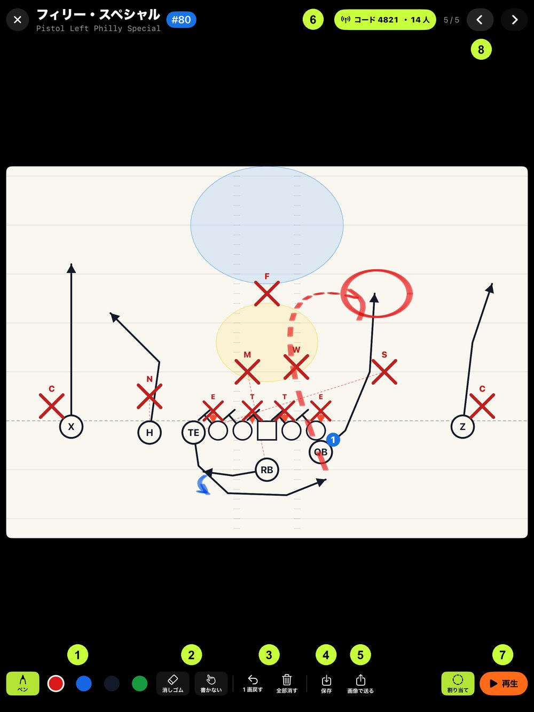
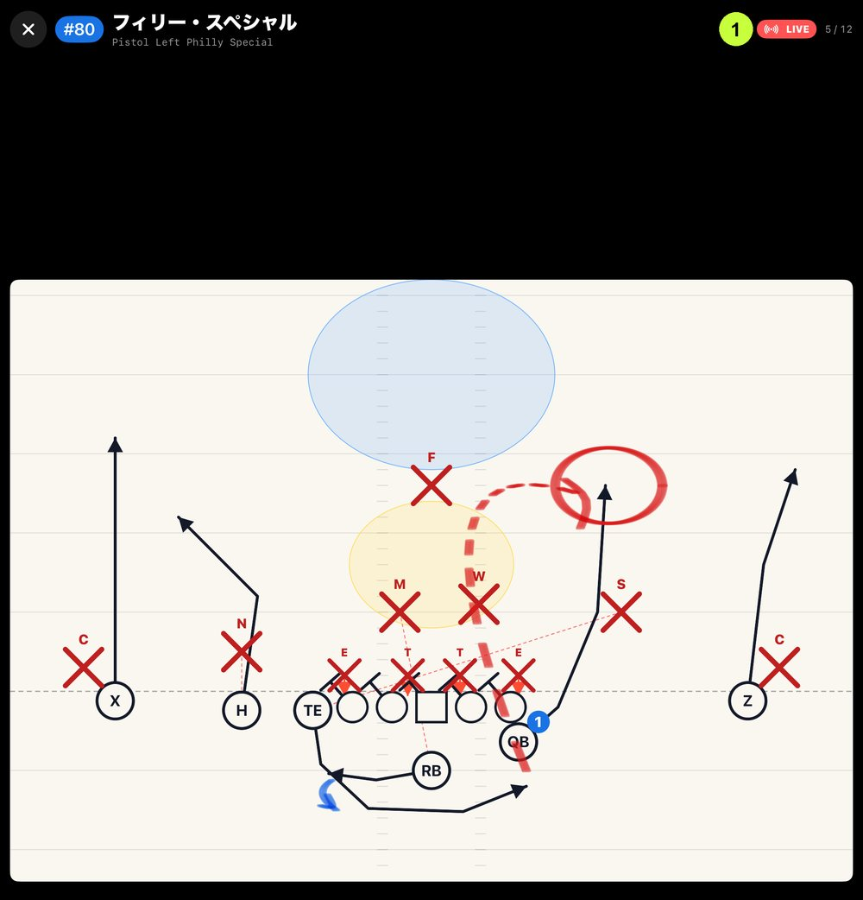
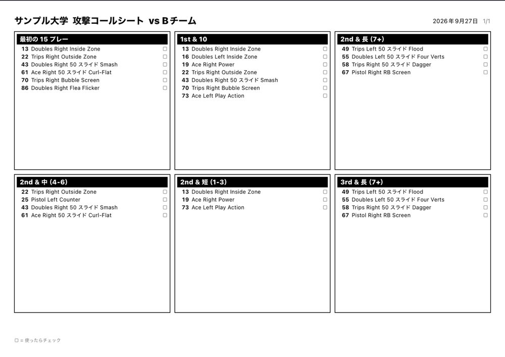
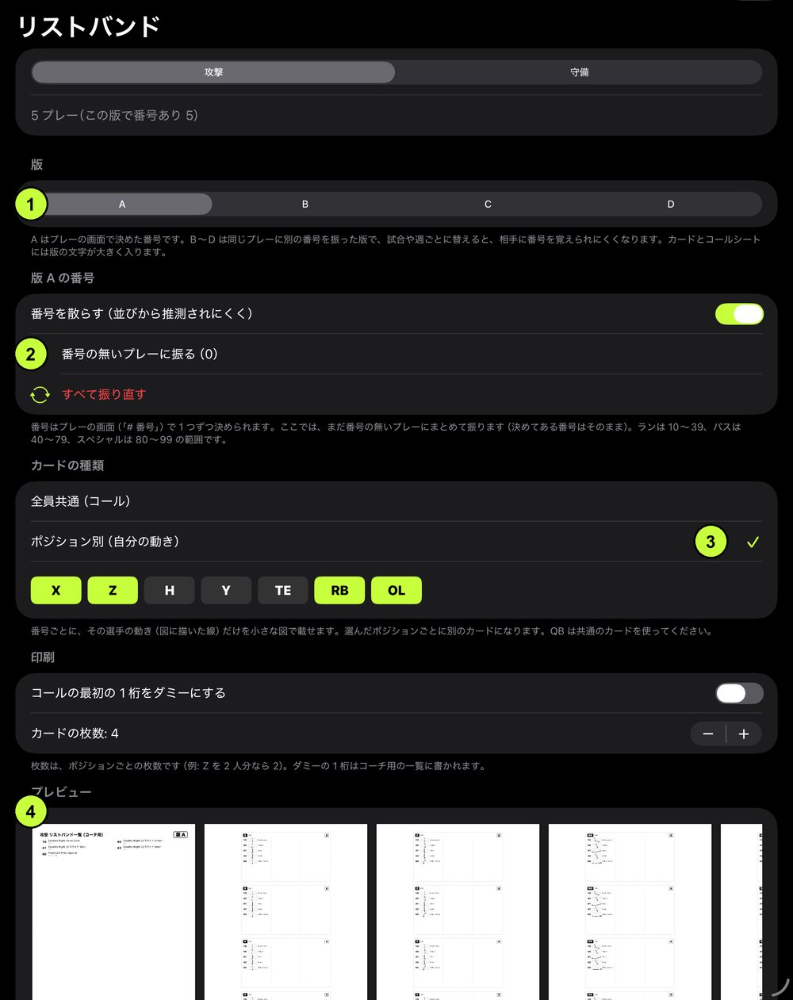
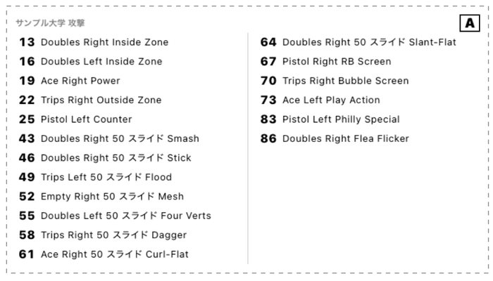
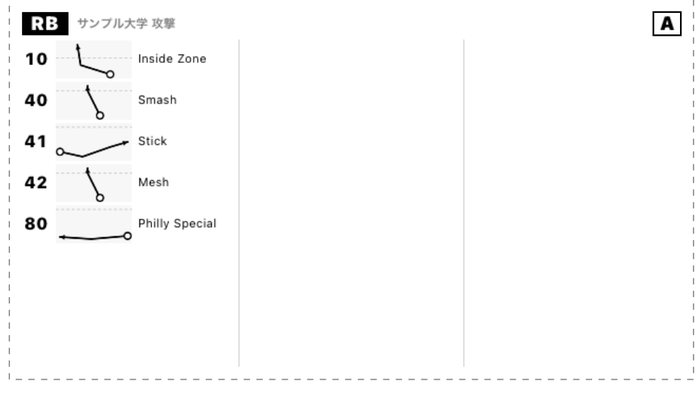

Playbook — 使い方
作る → 説明する → 配る
作戦ボード（Playbook タブ）の使い方を、画面の図で説明します。図の番号は、下の説明の番号と対応しています。作戦ボード・説明モード・PDF は「Playbook Pro」の機能です。選手がコーチの配信を見るだけなら無料で使えます。次のアップデートの印が付いたものは、次のアップデートで使えるようになります。
一覧（Playbook タブ）

iPad の一覧（iPhone も同じ並び）
- 攻撃／守備 — 一覧に出す側を切り替えます。新しく作るプレーもこの側になります
- 配る — プレイブック・コールシート・リストバンドの PDF を作ります
- 使い方 — アプリの中でもこの説明を見られます次のアップデート
- 説明を見る — 選手用。コーチの配信に参加します（無料）
- 設定 — チーム名（PDF に印刷）と守備の記号（× か ■）
- ＋ — 章（ラン・パス・スペシャルなど）を選んで、新しいプレーを作ります
今の版では、「配る」「使い方」「説明を見る」「設定」のボタンは画面の上の端にアイコンで並んでいます。iPad では「…」の中にまとまっていることがあります。次のアップデートで、図のように名前つきで並ぶようになります。
プレーを作る（作図の画面）

作図の画面（iPad 縦。iPhone では情報の欄は ⓘ の中）
- 隊形 — ひな形を選ぶと、自分のチームの 11 人がその隊形に並びます。守備のプレーでは「守備の型」を選びます
- 相手の守備 — カバレッジを選ぶと相手が並び、守る場所（ゾーン）が色で出ます。「割り当て」で表示を切り替えられます
- コール — 押すと、隊形＋向き＋プロテクション＋モーション＋コンセプトの順にコールを組み立てられます。候補にない言葉はそのまま入力できます
- 番号 — サイドラインで呼ぶ番号です。コールシートとリストバンドに載ります。同じ番号がほかのプレーにあると知らせます次のアップデート
- 説明モード — 盤を画面いっぱいにして、書き込みながら説明します（下で説明）
- 道具 — 下の表を参照。道具を選んでから盤の上をなぞります
- 再生 — 描いた通りに選手が動きます。線を描いていない守備は、選んだ型どおりに動きます
- 右上のボタン — 左から、1 つ前に戻す・メニュー（左右反転・選手の追加・線をすべて消す）・プレーの情報（名前・章・使う状況・覚える週・メモ）
| 移動 | 選手をドラッグして動かします。タップで選ぶと、記号（WR・TE など）の変更や削除ができます |
|---|
| ルート | 選手から指でなぞるとルート（先が矢印）。描き直すと置き換わります |
|---|
| ブロック | 選手から指でなぞるとブロック（先が T の線） |
|---|
| モーション | 選手から指でなぞると、スナップ前のモーション（点線）。ルートはモーションの先から始まります |
|---|
| 読み順 | WR をタップした順に、QB が読む順番（青い丸の数字）が付きます。もう一度タップすると外れます |
|---|
| 消す | 消したい線をタップします |
|---|
「使う状況」（1st & 10・3rd & 短・レッドゾーンなど）を付けておくと、コールシートでその区分に並びます。
記号の見方
アメリカの作戦図の書き方に合わせています。記号は「自分のチームか相手か」ではなく、攻撃か守備かで決まります。守備のプレーを作るときは、自分のチームが × で描かれます。
説明モード（ミーティング）

説明モード。赤い点線と丸はコーチの書き込み
- ペンと色 — 指や Apple Pencil でそのまま書けます。色は 4 色
- 消しゴム・書かない — 「書かない」にすると、触っても書かれません（画面を指しながら話すとき）
- 1 画戻す・全部消す
- 保存 — 書き込みがプレーに残り、次に開いたときと PDF に入ります
- 画像で送る — 書き込みごと 1 枚の画像にして送れます
- 配信 — 同じ部屋の選手の iPhone に、この画面を映します（次の節）
- 再生 — 動きを見せます。「割り当て」で守備の守る場所の表示を切り替えます
- 前後のプレー — 次のプレーへ移ります（配信中は選手の画面も一緒に変わります）
選手の iPhone への配信

選手の画面。コーチの書き込みと再生がそのまま映ります
- LIVE — コーチの画面を見ている印です
コーチ: 説明モードの「配信」→「選手の iPhone に配信する」を押すと、4 桁のコードが出ます。
選手: Playbook タブの「説明を見る」を押し、名前とコードを入れて参加します。
同じ部屋（Wi-Fi か Bluetooth が届く範囲）で使います。インターネットは使いません。同時に見られるのは 20 人くらいまでが目安です。選手は無料のまま参加できます。つながらないときはサポートをご覧ください。
配る（PDF）
一覧の「配る」から選びます。どの画面にも「プレビュー」があり、設定を変えるとすぐに表示が変わります。タップすると実際の PDF を拡大して確かめられます次のアップデート。
プレイブック
表紙と目次が付きます。「1 ページに 1 プレー（説明用）」か「1 ページに 4 プレー（一覧・配布用）」を選べます。説明モードの書き込みとメモを入れるかどうかも選べます。AirDrop・LINE・メールなどで選手に送れます。
コールシート

コールシート（A4 横）。状況ごとに番号とコールが並び、□ は試合中のチェック用
プレーの「使う状況」ごとに並びます（1 ページに 6 区分）。対戦相手と試合日を入れられます。リストバンドの版を選ぶと、その版の番号で並びます次のアップデート。
リストバンド

リストバンドの画面
- 版 A〜D次のアップデート — 同じプレーに、版ごとに別の番号を振れます。A はプレーの画面で決めた番号、B〜D はこの画面で振ります。試合や週ごとに版を替えると、相手に番号を覚えられにくくなります。カードとコールシートには版の文字が入ります
- 番号を振る — 番号の無いプレーにまとめて振ります。手で決めた番号はそのまま残ります次のアップデート。ランは 10〜39、パスは 40〜79、スペシャルは 80〜99 の範囲です。「番号を散らす」で並びから推測されにくくなります
- カードの種類次のアップデート — 「全員共通」か「ポジション別」。ポジション別では、カードを作るポジション（X・Z・RB・OL など）を選びます
- プレビュー — 1 ページ目がコーチ用の一覧、2 ページ目から手首用のカードです
全員共通のカードとポジション別のカード

全員共通: 番号とコール（QB 用・全員が同じカードのとき）

ポジション別（RB）: 番号ごとに自分の動きだけの小さな図次のアップデート
ポジション別のカードには、作図で描いた線（ルート・ブロック・モーション）が小さな図で入ります。点線はスクリメージライン、丸がスタートの位置です。OL のカードは 5 人分のブロックと、プロテクションのコールが入ります。線を描いておくほど、カードが役に立ちます。
カードは 4.5 × 2.5 インチで、1 枚に 24 プレーまで入ります。点線で切り取ってリストバンドに入れてください。印刷は「実際のサイズ（100%）」で行います。「コールの最初の 1 桁をダミーにする」をオンにすると、サイドラインで「7・24」のように呼び、選手は最初の 1 桁を無視します。
© 2026 Playbook